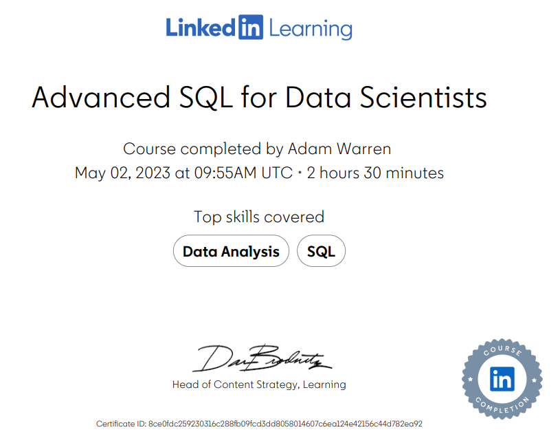

SQL
All of the resources you need to master SQL
SQL Qualifications
This section summaries the resources I used to learn SQL skills in preperation for my new role. It is important to note that there are many great courses online by many different authors,
that cover the same material to an equally high standard, and that I have only listed the one I found most useful out of the ones I have completed in the interest
of reducing the repetition of content. However I did complete many more courses as this offered explanations from different authors and different data sets.
With this being said, I started with this course by Walter Shields
This course offers a very comprehensive introduction to SQL that upon completion gives you the skills to interact with data in many ways and offers a final project that allows you to put everything into practice at the end. The teaching covers comprehensively the principal queries of SQL including: how to compose queries, joins for multiple data sets, grouping and nesting queries. This is the perfect course to begin SQL training with as you build a very strong foundation to then be able to properly engage with more complex topics.

Once the basics have been covered and become easy to implement, I found Dan Sullivan's Intermediate and Advanced level courses perfect. The intermediate level offers a quick recap of the basics as seen in SQL Essential Training, before moving into a much deeper look into filtering, aggregation, window functions, ordering outputs and CTEs. Having mastered the basics, this course allows you to really begin manipulating data and to ask (and get answers for) much more specific questions. Indeed, at the advanced level Dan offers another course which builds upon the precision you gain in your data querying, to look beyond the queries per se, but onto a focus on indexes and optimisation, as well as bringing in Python to enhance SQL possibilities. I think this is a particularly useful course, as it offers a method to formalise an 'Advanced' qualification, that again can become a great talking point on a CV.
 'Importantly, after learning SQL via the above resources, it is very important to undertake projects to both showcase in a portfolio, and also to practice everything that has been learnt in a hands on way, that allows you to really get to grips with data. Below are the resources I used for SQL practice. Ensure that when completing guided tutorials, that you then apply this to other personal projects so that you are sure you can do it without guidance, and also to extend the tutorial with the data given.
50 SQL Leetcode Questions
This is probably the resource which most helped me develop. Working through these 50 questions was challenging, but very useful as it gives you technical interview style questions which really tests your ability to understand what each function does, the robustness of your solutions and also forces you to use and understand joins which aren't as common in normal projects.